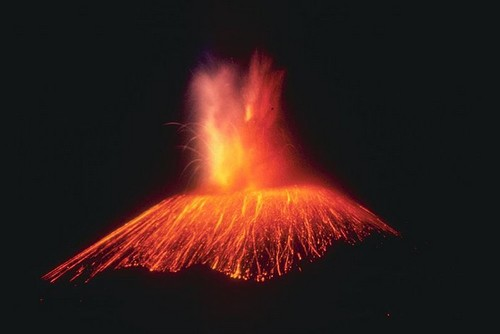

1 / 4

Great Barrier Reef
2 / 4

Puerto Princesa Underground River
3 / 4

Table Mountain
4 / 4

Paricutin

The Grand Canyon is one of the most remarkable natural wonders in the world. Located in the state of Arizona, USA, it is one of the deepest gorges on Earth with an average depth of one mile (1.6km) and an average width of ten miles (16km). The canyon was carved over the past 6 million years by the action of the Colorado River as it drops over 2,200 feet (670m) along the 277-mile (446 km) length of the gorge. For thousands of years, the area has been continuously inhabited by Native Americans who built settlements within the canyon and its many caves. The Pueblo people considered the Grand Canyon a holy site and made pilgrimages to it.
Located in the Coral Sea, off the coast of Queensland, Australia. The great barrier reef is the world’s largest individual formation created by living organisms. As the largest coral reef in the world, the Great Barrier Reef includes over 900 islands, over 2,900 separate reefs, and supports one of the most diverse ecosystems in the world. It is possible one of the grandest natural wonders in the world. It is the only wonder of nature that may be visible recognized from outer space.

Mount Everest is the highest mountain in the world with the summit reaching a peak of 29,029 feet (8,848 m). It is located in the Himalayan mountain range on the border between Nepal and Tibet, China. Mt. Everest has a great deal of history behind it. It was named after Sir George Everest, surveyor-general of India. On May 28, 1953 Sir Edmund Hillary and Tenzing Norgay were left behind by their companions. They hoped to be the first to climb the world’s highest mountain.The next day they became the first people in the world to climb Mount Everest.

One of the greatest natural wonders, Aurora. The auroras, also known as the Northern Lights, are naturally occurring lights that create intriguing and spectacular displays in the sky. The aurora lights frequently appear as diffused glow lighting up the horizon. The most amazing sight is when the northern lights appears as waves across the sky; it is almost as if the lights are dancing.

The Garganta del Diablo (Devil’s throat) with its U-shape is undoubtedly the highlight of these majestic waterfalls. It is 82 metres high, 150 metres wide and 700 metres long, while the rest of the falls average 64 metres. Iguazu Falls has long been one of Argentina and Brazil’s most popular touristic destinations. Over 2000 species of plants, 400 of birds and 70 mammals have been registered in the area.
Parícutin (volcano) is a cinder cone volcano in the Mexican state of Michoacán. The volcano is unique in the fact that its evolution from creation to extinction was witnessed, observed and studied by human beings. It appears on many versions of the Natural Wonders of the World. Parícutin is part of the Michoacán-Guanajuato volcanic field, which covers much of west central Mexico. It is part of the Ring of Fire.

Jejudo is a volcanic island, 130 km from the southern coast of Korea. The largest island and smallest province in Korea, the island has a surface area of 1,846 sqkm. The island contains the natural World Heritage Site Jeju Volcanic Island and Lava Tubes. A central feature of Jeju is Hallasan, the tallest mountain in South Korea and a dormant volcano, which rises 1,950 m above sea level
The Puerto Princesa Subterranean River National Park is one of the most distinguished protected areas of the Philippines. It is located some 360 miles southwest of Manila. It was established as a National Park in 1971 primarily to protect and preserve the intact old growth forest, interesting wildlife, pristine white sand beaches, unspoiled natural beauty and one of the most impressive caves systems in the world.
Table Mountain is a flat-topped mountain forming a prominent landmark overlooking the city of Cape Town in South Africa. It is one of the New natural Wonders of world. It is a significant tourist attraction, with many visitors using the cableway or hiking to the top.

Ha Long Bay, in the Gulf of Tonkin, includes some 1,600 islands and islets, forming a spectacular seascape of limestone pillars. Because of their precipitous nature, most of the islands are uninhabited and unaffected by a human presence. The site’s outstanding scenic beauty is complemented by many nature lovers. The bay features thousands of limestone karsts and isles in various sizes and shapes. The limestone in this bay has gone through 500 million years of formation in different conditions and environments. The evolution of the karst in this bay has taken 20 million years under the impact of the tropical wet climate. Ha Long Bay is home to 14 endemic floral species and 60 endemic faunal species. Historical research surveys have shown the presence of prehistorical human beings in this area tens of thousands years ago.
Contact
❗ Larlin,Village Apalit Pampanga McArthur Highway, Sampaloc Philippines☎ Phone: +639505076610